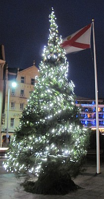

San Antonio, Texas,
U.S.A.
Lé 23 d'dézembre, 1967.
Moussieu l'Rédacteu,
I' m'sembl'ye tch'i' n'y a qu'tchiques mais qué j'tais à fêter l'Noué d'l'année passée, et nouos r'véla à la veil'ye d'un autre! Où'est qué l'temps s'passe? Enfîn, chutte fais j'ai la satisfaction d'aver env'yé des complyîments d'la saison à m's anmîns en Australie, en Nouvelle Zélande, en Angliétèrre, en France, en Jèrri et en Dgèrnésy en temps (j'l'espéthe - car il' 'taient dans la poste dévant l'drein jour dé novembre) pour tch'il' arrivent à destinnâtion dans les temps d'Noué. En général, j'env'yie un coupl'ye d'chent cartes d'Noué, mais l'année passée j'passis les trais dreines sémaines dé novembre et l'c'menchement d'dézembre en mé dans l'yacht à iun d'mes anmîns d'Fort Lauderdale, en Floride, et d'Long Island, à New York, et il 'tait trop tard pour env'yer des cartes à l'êtrangi quand j'èrvîns à tèrre. quand j'arrivis à San Antonio, Texas, pour y passer Noué auve ma fille, et qué l'porteux d'lettres c'menchit à m'en apporter par la douzaine - prîncipalement d'Jèrri - j'avais honte dé mé-même viyant qu'j'en r'chévais d'touos m's anmîns à tchi j'n'en avais pon env'yé!
J'mé d'mande, tout d'même, si ch'n'est pon eune couôteunme tchi s'en va s'passer, la couôteunme d'env'yer des cartes à Noué. Ichîn, en Améthique, i' couôtent dé pus en pus à acater touos l's ans. Ch'est la renchiéthe - comme pour tout aut' choses. J'liêsais dans la gâzette à ches drein qué l'gouvèrnément à Washigton veint d'annoncer tch'i' s'en va acouo couôter pus pour env'yer des lettres par la poste l'année tchi veint. Ch'est touos l's ans à ch't heu qué v'la tchi s'arrive. Ch'est l'prix tch'i' faut payer pour lé progrès - ou l'socialisme? Heutheusement, la rêussite né m'a pon oubliée dans la vie, et v'la tch'i' n'm'empêche pon d'mangi assez pour garder ma vielle poutchie d'os ensembl'yes; ch'est en tchi jé n'mé pliains pon. J'sis r'connaîssant pour les bouannes choses dé la vie, et j'en ai ieu pus d'bouannes qué d'mauvaises!
Si l'Bouan Dgieu m'prêsèrve acouo tchiques années, i' faudra qué j'reste en Jèrri un hiver pour passer l'jour dé Noué parmi m's anmîns et vaie combein qu'les couôteunmes du temps passé ont changi avaû l's années. Y'a-t-i' acouo des partis d'Noué dans les campanges comme quand j'tais janne? Nou-s'attendait fête à ches partis-là toute l'année. Nou pouvait danser quâsi toute la niet au son du "Flutina", un accordéon d'chu nom d'fabrique-là tch'était populaithe dans chu temps-là. Et nou jouait à toutes sortes d'gammes et nou n'mantchait pon l'occâsion d'embraichi les jannes filles souos l'dgi! Y'en avait d'pendu au haut d'toutes les portes. À ch't heu qu'j'y pense, nou n'en vait pon d'autre en Jèrri. J'pense bein qu'ch'est viyant tch'i' n'y a presqué pon d'pommièrs dans l'Île. Ichîn, au Texas, nou-s-en vait partout dans les bouais, du dgi, sustout dans les tchênes - mais nou n'embraiche pon les filles dessous! I' n'manque pon quand-mème d'occâsion d'fêter Noué, et ch'est mangnifique à vaie les décorâtions en d'houors des maisons dans la ville - des illeunminnâtions d'lampions êlectriques dé toutes es couleurs tout l'long des maîsons et des gardîns, et parmi les bouais en d'vant. Et dans bein des gardîns nou vait des traînés artificiels, grands comme des vrais traînés, atout un Papa Noué assis d'dans à cachi siex chèrs du nord - artificiels étout, sans doute, mais aussi grands comme des vrais chèrs - et tout illeunminné quand veint la niet.

L's arbres d'Noué n'manquent pon ichîn n'tout. Il' en ont mème déhouors et en d'dans des maîsons, et tous illeunminnés étout. Ch'est vrainment un mangnifique spectacl'ye. Dans les rues commèrciales dans l'mitan d'la ville, et dans les f'nêtres des boutiques, ch'est illeunminnâtions, couleurs et banniéthes partout. J'pense bein qu'ch'est d'mème à St. Hélyi étout d'nos jours, et v'la tchi m'ramémouaithe qué j'tions extâsiés comme mousses quand nou viyait eune lantèrne couleuthée et qu'nou disait "Gas, les blue light!"
En pâlant d'Noué, v'la tchi m'fait penser, étout, qué touos les Noués n'ont pon 'té fête pour les Jèrriais d'ancienneté. Les vielles gens gardaient Noué l'six d'janvyi, lé tout temps passé, et l'six d'janvyi, 1781, quand les Français souos l'Baron de Rullecourt envahîdrent Jèrri, n'apportit pon grand' fête. Lé Baron n'fut pon grand' sorte d'Papa Noué pour les Jèrriais et ch'fut un jour dé deu pour bein des pliaiches! Et pus d'un Noué fut passé sus les camps d'batâlles du monde par un tas d'Jèrriais entre l's années 1914 et 1944, et y'avait du crêpe à la pliaiche d'arbres d'Noué dans bein des maisons!
Enfîn, dgieu mèrci, qué j'n'avons pon ches fardés-là à supporter à ch't heu, et qué j'pouvons jouï d'la jouaie d'pouver fêter - sans gêne - l'annivèrsaithe dé la naissance du Seigneur Rédempteur et Prînce dé Paix. Et ch'est pour nous eune vraie bénédiction d'pouver aller à l'églyise et êt' là à mînniet la sèrvelle dé ch't anniversaithe pour chanter l' "Adeste Fideles" et s'entr'souhaiter - comme j'vouos l'fais, Moussieu l'Rédacteu, et à touos vouos lecteurs - un raide Bouan Noué!
George d'La Forge
JWP 4/1/1978
Viyiz étout: